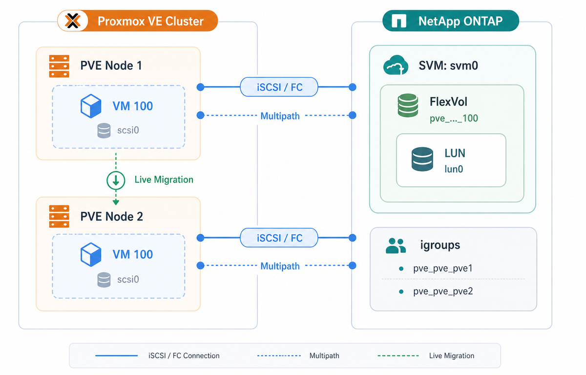

jt-pve-storage-netapp
NetApp ONTAP SAN/iSCSI/FC Storage Plugin for Proxmox VE NetApp ONTAP SAN/iSCSI/FC Proxmox VE 儲存外掛程式
Enterprise SAN storage integration for Proxmox VE using NetApp ONTAP REST API. Supports iSCSI and Fibre Channel with multipath, snapshots, FlexClone, live migration, and automatic device lifecycle management. 透過 NetApp ONTAP REST API 將企業級 SAN 儲存整合至 Proxmox VE。支援 iSCSI 及 Fibre Channel，具備 multipath、快照、FlexClone、即時遷移，以及自動裝置生命週期管理。
Disclaimer 免責聲明
- This plugin is provided "AS IS" without warranty of any kind. 本 plugin 以「現況」提供，不附帶任何形式的保證。
- iSCSI protocol has been tested but not extensively in production environments. iSCSI 協定已經過實際客戶環境測試，但尚未大規模驗證。
- FC (Fibre Channel) protocol has NOT been fully verified. FC (Fibre Channel) 協定尚未完全驗證。
- Always test thoroughly in a non-production environment before deployment. 部署前請務必在非正式環境中徹底測試。
- Back up your data regularly and have a recovery plan in place. 請定期備份資料，並準備好復原計畫。
Features 功能特性
Complete SAN storage integration leveraging NetApp ONTAP enterprise capabilities. 完整的 SAN 儲存整合，充分運用 NetApp ONTAP 企業級功能。
--content images,rootdir.
容器 rootfs 可放在 NetApp LUN 上。以 --content images,rootdir 設定。
Requirements 系統需求
Proxmox VE
| libpve-storage-perl | Storage APIVER | Plugin reports plugin 回報 | Compatibility 相容性 |
|---|---|---|---|
| 9.0.16 - 9.1.2 | 13 | 13 | Supported 支援 |
| 9.1.3 - 9.1.5 | 14 | 14 | Supported 支援 |
| 9.1.6+ | 15 | 15 | Supported 支援 |
Proxmox VE raised the storage API version twice within the 9.1 point releases, so the required value depends on libpve-storage-perl, not on the Proxmox VE release number. The plugin negotiates it at load time, so no "implementing an older storage API" warning is emitted. Check yours with dpkg -l libpve-storage-perl.
Proxmox VE 在 9.1 的小版本之中兩度調高 storage API 版本，因此所需的版本取決於 libpve-storage-perl，而不是 Proxmox VE 的版號。plugin 會在載入時自行協商，因此不會出現「implementing an older storage API」警告。可用 dpkg -l libpve-storage-perl 確認目前版本。
NetApp ONTAP
- ONTAP 9.8 or later (REST API required) ONTAP 9.8 或更新版本（需 REST API）
- iSCSI or FC license enabled 已啟用 iSCSI 或 FC 授權
- SVM with iSCSI/FC service enabled and at least one data LIF configured SVM 已啟用 iSCSI/FC 服務，且至少設定一個 data LIF
- Aggregate with available space Aggregate 有可用空間
- User account with REST API permissions for volumes, LUNs, igroups, snapshots, aggregates, and network interfaces 使用者帳號需有 REST API 權限，可管理 volumes、LUNs、igroups、snapshots、aggregates 及 network interfaces
Proxmox VE Node Dependencies Proxmox VE 節點相依套件
| Package 套件 | Purpose 用途 | Required 必要 |
|---|---|---|
open-iscsi | iSCSI initiator (iscsiadm) iSCSI initiator (iscsiadm) | Yes (for iSCSI) 是（iSCSI 模式） |
multipath-tools | Multipath I/O daemon (multipathd) Multipath I/O 背景服務 (multipathd) | Yes 是 |
sg3-utils | SCSI utilities (sg_inq) SCSI 工具 (sg_inq) | Yes 是 |
psmisc | Process utilities (fuser) for device-in-use detection 行程工具 (fuser)，偵測裝置使用中 | Yes 是 |
libwww-perl | HTTP client for REST API HTTP 客戶端，供 REST API 使用 | Yes 是 |
libjson-perl | JSON encoding/decoding JSON 編碼/解碼 | Yes 是 |
liburi-perl | URI handling URI 處理 | Yes 是 |
lsscsi | List SCSI devices (troubleshooting) 列出 SCSI 裝置（疑難排解用） | Recommended 建議 |
Installation 安裝
First-Time Installation 首次安裝
apt update
apt install -y open-iscsi multipath-tools sg3-utils psmisc \ libwww-perl libjson-perl liburi-perl lsscsi
systemctl enable --now iscsid systemctl enable --now multipathd
dpkg -i jt-pve-storage-netapp_0.2.28-1_all.deb
The plugin automatically configures multipath and reloads Proxmox VE services (pvedaemon, pvestatd, pveproxy). Plugin 會自動設定 multipath 並重新載入 Proxmox VE 服務（pvedaemon、pvestatd、pveproxy）。
Fix Broken State 修復安裝失敗狀態
If you ran dpkg -i before installing dependencies and got errors:
如果在安裝相依套件前就執行 dpkg -i 而出現錯誤：
apt update apt --fix-broken install -y dpkg -l | grep jt-pve-storage-netapp
Cluster Installation 叢集安裝
Parameter verification failed. (400).
重要：在 Proxmox VE 叢集中，此 plugin 必須在所有節點上安裝。未安裝的節點會顯示 Parameter verification failed. (400)。
Repeat the 4 steps above on EACH node. Install the plugin on ALL nodes first, then add the storage configuration (only once, on any node). 在每個節點上重複上述 4 個步驟。先在所有節點安裝 plugin，再新增儲存設定（只需在任一節點操作一次）。
Upgrade SOP 升級標準作業程序
When upgrading, follow these steps on every cluster node in sequence (one node at a time): 升級時，請依序在每個叢集節點上執行以下步驟（一次一個節點）：
# Backup multipath.conf cp /etc/multipath.conf /etc/multipath.conf.bak.$(date +%Y%m%d-%H%M%S) # Note current version dpkg -l jt-pve-storage-netapp | tail -1
For safest upgrade, migrate or stop VMs that have disks on this storage. Live VMs will continue to work during upgrade, but a clean state simplifies recovery if anything goes wrong. 最安全的做法是先將使用此儲存的 VM 遷移或停止。升級期間執行中的 VM 仍可繼續運作，但乾淨的狀態有助於出問題時的復原。
dpkg -i jt-pve-storage-netapp_0.2.28-1_all.deb
# If warned about dangerous multipath settings, edit: nano /etc/multipath.conf # Apply: no_path_retry queue -> 30, remove queue_if_no_path, dev_loss_tmo infinity -> 60 systemctl restart multipathd # restart, NOT reload # Verify dpkg -l jt-pve-storage-netapp | grep ii pvesm status | grep netapp multipath -ll
Move to the next cluster node and repeat from Step 1. Do not upgrade multiple nodes simultaneously. 移至下一個叢集節點，從步驟 1 重複。請勿同時升級多個節點。
Quick Start 快速入門
Add Storage (iSCSI) 新增儲存（iSCSI）
pvesm add netappontap netapp1 \ --ontap-portal 192.168.1.100 \ --ontap-svm svm0 \ --ontap-aggregate aggr1 \ --ontap-username pveadmin \ --ontap-password 'YourSecurePassword' \ --content images,rootdir \ --shared 1
Add Storage (FC / Fibre Channel) 新增儲存（FC / Fibre Channel）
pvesm add netappontap netapp-fc \ --ontap-portal 192.168.1.100 \ --ontap-svm svm0 \ --ontap-aggregate aggr1 \ --ontap-username pveadmin \ --ontap-password 'YourSecurePassword' \ --ontap-protocol fc \ --content images \ --shared 1
Verify 驗證
pvesm status # Name Type Status Total Used Available # netapp1 netappontap active ... ... ...
pvesm add). After adding, the storage will appear in the Web UI storage list and support all VM operations normally.
注意：這是第三方自訂儲存 plugin，不會出現在 Web UI 的「新增儲存」下拉選單中 -- 必須透過 CLI (pvesm add) 新增。新增後，儲存會出現在 Web UI 的儲存清單中，並正常支援所有 VM 操作。
Configuration Reference 設定選項參考
Required Options 必要選項
| Option 選項 | Description 說明 | Example 範例 |
|---|---|---|
ontap-portal |
ONTAP management IP or hostname. Use the cluster management LIF (or the SVM management LIF for SVM-scoped users) — both migrate during a controller takeover. A node management LIF does not, so if the controller hosting it fails, the storage stays inactive until giveback even though I/O has already failed over.
ONTAP 管理 IP 或主機名稱。請使用叢集管理 LIF (SVM 層級使用者則用 SVM 管理 LIF) — 這兩種在控制器 takeover 時都會遷移。節點管理 LIF 不會，因此承載它的控制器故障時，即使 I/O 早已完成切換，該儲存仍會維持 inactive 直到 giveback。
| 192.168.1.100 |
ontap-svm | Storage Virtual Machine (SVM/Vserver) name Storage Virtual Machine (SVM/Vserver) 名稱 | svm0 |
ontap-aggregate | Aggregate for volume creation 建立 volume 用的 aggregate | aggr1 |
ontap-username | ONTAP API username ONTAP API 使用者名稱 | pveadmin |
ontap-password | ONTAP API password ONTAP API 密碼 | YourSecurePassword |
Optional Options 可選選項
| Option 選項 | Default 預設值 | Description 說明 |
|---|---|---|
ontap-protocol | iscsi |
SAN protocol: iscsi or fc (Fibre Channel)
SAN 協定：iscsi 或 fc (Fibre Channel)
|
ontap-ssl-verify | 1 | Verify SSL certificates (0 = disable for self-signed) 驗證 SSL 憑證（0 = 停用，適用自簽憑證） |
ontap-thin | 1 | Use thin provisioning (0 = thick provisioning) 使用精簡配置（0 = 完整配置） |
ontap-igroup-mode | per-node |
igroup mode: per-node (recommended) or shared
igroup 模式：per-node（建議）或 shared
|
ontap-cluster-name | pve | Cluster name for igroup naming. Use different values for multiple storages on the same SVM. igroup 命名用的叢集名稱。同一 SVM 上有多個儲存時請使用不同值。 |
ontap-device-timeout | 60 | Device discovery timeout in seconds 裝置探索逾時秒數 |
Proxmox VE Standard Storage Options Proxmox VE 標準儲存選項
These are standard Proxmox VE storage options that apply to all storage types, including this plugin. 這些是 Proxmox VE 標準儲存選項，適用於所有儲存類型，包含本外掛程式。
| Option 選項 | Default 預設值 | Description 說明 |
|---|---|---|
content | images |
Content types this storage can hold. Use images for VM disks only, or images,rootdir to also support LXC containers. Other valid values: iso, vztmpl, backup (not supported by this plugin).
此儲存可存放的內容類型。使用 images 僅支援 VM 磁碟，或使用 images,rootdir 同時支援 LXC 容器。其他值：iso、vztmpl、backup（本外掛不支援）。
|
shared | 0 |
Mark storage as shared across cluster nodes. Must set to 1 for this plugin -- required for live migration. Without this, Proxmox VE will try to copy disk data during migration instead of using the shared SAN path.
標記儲存為叢集節點間共享。本外掛必須設為 1 -- 即時遷移所需。若未設定，Proxmox VE 會在遷移時嘗試複製磁碟資料，而非使用共享 SAN 路徑。
|
nodes | (all) （全部） |
Restrict storage to specific nodes. Comma-separated list of node names. Example: --nodes pve1,pve2,pve3. Omit to allow all nodes.
限制儲存僅供特定節點使用。以逗號分隔的節點名稱清單。範例：--nodes pve1,pve2,pve3。省略表示允許所有節點。
|
disable | 0 |
Disable this storage. Set to 1 to temporarily deactivate without removing the configuration.
停用此儲存。設為 1 可暫時停用而不刪除設定。
|
rootdir in the content type: --content images,rootdir. Without it, LXC creation on this storage will fail.
提示：若要支援 LXC 容器，必須在 content 類型中加入 rootdir：--content images,rootdir。未設定時，在此儲存上建立 LXC 會失敗。
Example storage.cfg (iSCSI) 範例 storage.cfg (iSCSI)
Example storage.cfg (FC SAN) 範例 storage.cfg (FC SAN)
ontap-portal is still required for ONTAP REST API access. The FC data path uses the FC fabric, not the management IP.
注意：FC 模式下仍需 ontap-portal 用於 ONTAP REST API 存取。FC 資料路徑使用 FC fabric，不是管理 IP。
Architecture 系統架構
1:1:1 Architecture Model 1:1:1 架構模型
Each VM disk maps to exactly one ONTAP FlexVol containing exactly one LUN, providing clean snapshot semantics. 每個 VM 磁碟對應到一個 ONTAP FlexVol，內含一個 LUN，提供乾淨的快照語意。

Object Mapping 物件對應
| Proxmox VE Object Proxmox VE 物件 | ONTAP Object ONTAP 物件 | Naming Pattern 命名規則 |
|---|---|---|
| Storage | -- |
User defined (e.g., netapp1)
使用者定義（例如 netapp1）
|
| VM Disk | FlexVol | pve_{storage}_{vmid}_disk{id} |
| VM Disk | LUN | /vol/{flexvol}/lun0 |
| Snapshot | Volume Snapshot | pve_snap_{snapname} |
| Proxmox VE Node | igroup | pve_{cluster}_{node} |
| Cloud-init | FlexVol | pve_{storage}_{vmid}_cloudinit |
| VM State | FlexVol | pve_{storage}_{vmid}_state_{snap} |
Module Architecture 模組架構
Multipath Safety Rules Multipath 安全規則
Rule 1: NEVER use multipath -F (capital F) 規則 1：絕對不要使用 multipath -F（大寫 F）
multipath -F flushes ALL unused multipath maps system-wide. If you have other storage (manual iSCSI LVM, other vendors, etc.) and there is no active I/O on it at the moment, it will be disconnected. Always use targeted flushing:
multipath -F 會清除系統上所有未使用的 multipath map。如果您有其他儲存（手動 iSCSI LVM、其他廠商等）且當時沒有 active I/O，該儲存會被斷開。請使用指定目標的清除：
# Identify stale WWIDs (look for "failed faulty" in all paths) multipath -ll # Flush ONE specific stale WWID (lowercase f) multipath -f 3600a09807770457a795d5a7653705853
Rule 2: After editing multipath.conf, use restart not reload 規則 2：編輯 multipath.conf 後，使用 restart 而非 reload
# CORRECT - applies new settings AND flushes stale state systemctl restart multipathd # WRONG - only re-reads config, leaves stale maps in place systemctl reload multipathd
Rule 3: Check your multipath.conf settings 規則 3：檢查您的 multipath.conf 設定
If your config contains any of these, the entire PVE node can hang when a LUN is deleted or becomes unavailable: 如果您的設定包含以下任何一項，當 LUN 被刪除或變得不可用時，整個 PVE 節點可能會當機：
| Setting 設定 | Risk 風險 | Fix 修正 |
|---|---|---|
no_path_retry queue |
I/O queues forever I/O 永久排隊 |
Change to no_path_retry 30
改為 no_path_retry 30
|
queue_if_no_path |
Same as above 同上 |
Remove from features line
從 features 行移除
|
dev_loss_tmo infinity |
Stale devices never removed 殘留裝置永遠不會被移除 |
Change to dev_loss_tmo 60
改為 dev_loss_tmo 60
|
Rule 4: v0.2.2+ handles cleanup automatically 規則 4：v0.2.2+ 自動處理殘留清理
You do not need to manually clean stale devices after upgrading to v0.2.2+. The plugin automatically detects and removes its own orphan devices in the background during normal storage status polling. It only touches WWIDs it created and never affects other storage. 升級至 v0.2.2+ 後不需要手動清理殘留裝置。Plugin 會在正常儲存狀態輪詢時，於背景自動偵測並移除自己產生的殘留裝置。只會處理自己建立的 WWID，不會影響其他儲存。
Supported Features Matrix 功能支援表
| Feature 功能 | Status 狀態 | Notes 備註 |
|---|---|---|
| Disk create/delete 磁碟建立/刪除 | Supported 支援 | FlexVol + LUN |
| Disk resize 磁碟調整大小 | Supported 支援 | Online resize supported 支援線上調整 |
| Snapshots 快照 | Supported 支援 | ONTAP Volume Snapshots |
| Snapshot rollback 快照倒回 | Supported 支援 | VM must be stopped VM 必須先停止 |
| Live migration 即時遷移 | Supported 支援 | Via shared iSCSI/FC access 透過共享 iSCSI/FC 存取 |
| Thin provisioning 精簡配置 | Supported 支援 | Default enabled 預設啟用 |
| Multipath I/O | Supported 支援 | Automatic configuration 自動設定 |
| Template | Supported 支援 | Convert VM to template 將 VM 轉為範本 |
| Linked Clone | Supported 支援 | Via NetApp FlexClone (instant, space-efficient) 透過 NetApp FlexClone（即時、節省空間） |
| Full Clone | Supported 支援 | Via qemu-img copy 透過 qemu-img 複製 |
| Full Clone from Snapshot 從快照完整複製 | Supported 支援 | Via temporary FlexClone + qemu-img 透過暫時 FlexClone + qemu-img |
| Backup (vzdump) | Supported 支援 | Via snapshot 透過快照 |
| RAM Snapshot (vmstate) | Supported 支援 | v0.1.7+ |
| LXC Container (rootdir) | Supported 支援 | v0.2.0+ |
| EFI Disk | Supported 支援 | v0.2.0+ |
| Cloud-init Disk | Supported 支援 | v0.2.0+ |
| TPM State | Supported 支援 | v0.2.0+ |
Troubleshooting 疑難排解
Common issues and their solutions. For a comprehensive guide, see docs/TROUBLESHOOTING.md in the repository. 常見問題及解決方案。完整指南請參閱 repository 中的 docs/TROUBLESHOOTING_zh-TW.md。
Quick Diagnostic Commands 快速診斷指令
# Check storage status pvesm status # Check PVE daemon logs journalctl -xeu pvedaemon --since "10 minutes ago" # Check iSCSI sessions iscsiadm -m session # Check multipath devices multipathd show maps # Check ONTAP API connectivity curl -k -u username:password https://ONTAP_IP/api/cluster
Storage Not Active 儲存未啟用
Symptoms: Storage shows "inactive" in pvesm status. Cannot create VMs on storage.
症狀：在 pvesm status 中顯示 "inactive"。無法在該儲存上建立 VM。
Common Causes: 常見原因：
- Invalid credentials -- test with:
curl -k -u pveadmin:password https://192.168.1.100/api/cluster認證無效 -- 測試指令：curl -k -u pveadmin:password https://192.168.1.100/api/cluster - Network connectivity -- check:
ping <ontap-portal>andnc -zv <ontap-portal> 443網路連線問題 -- 檢查：ping <ontap-portal>及nc -zv <ontap-portal> 443 - SSL certificate issues -- temporarily disable:
pvesm set <storage-id> --ontap-ssl-verify 0SSL 憑證問題 -- 暫時停用：pvesm set <storage-id> --ontap-ssl-verify 0 - SVM not accessible or iSCSI service not enabled on the SVMSVM 無法存取或 SVM 上的 iSCSI 服務未啟用
Device Not Found After Create 建立後找不到裝置
Symptoms: Disk created successfully but device not appearing in /dev/.
症狀：磁碟建立成功但裝置未出現在 /dev/ 中。
Solutions: 解決方案：
# Rescan iSCSI sessions iscsiadm -m session --rescan # Reload multipath multipathd reconfigure multipath -v2
igroup Issues igroup 問題
Symptoms: LUN mapped but node cannot see the device. iscsiadm -m session shows active sessions but lsscsi shows no NETAPP devices.
症狀：LUN 已 map 但節點看不到裝置。iscsiadm -m session 顯示 active session 但 lsscsi 沒有 NETAPP 裝置。
Verify the node's iSCSI initiator IQN (from /etc/iscsi/initiatorname.iscsi) is listed in the correct igroup on ONTAP. Check with ONTAP CLI: igroup show -vserver <svm>.
確認節點的 iSCSI initiator IQN（來自 /etc/iscsi/initiatorname.iscsi）已列在 ONTAP 上正確的 igroup 中。ONTAP CLI 檢查：igroup show -vserver <svm>。
Hung Kernel Tasks (vgs blocked, D-state processes) Kernel 卡住（vgs 阻塞、D-state 行程）
Symptoms: vgs or other commands hang. ps aux shows processes in D state. PVE operations time out.
症狀：vgs 或其他指令卡住。ps aux 顯示 D state 的行程。PVE 操作逾時。
Root cause: Usually a stale multipath device with queue_if_no_path or no_path_retry queue. Any process that touches the device enters uninterruptible sleep (D-state).
根本原因：通常是設定了 queue_if_no_path 或 no_path_retry queue 的殘留 multipath 裝置。任何碰觸該裝置的行程都會進入不可中斷睡眠（D-state）。
Manual cleanup for stale devices with queue_if_no_path: 有 queue_if_no_path 的殘留裝置手動清理：
# 1. Disable queueing multipathd disablequeueing map <wwid> dmsetup message <wwid> 0 fail_if_no_path # 2. Flush the specific device multipath -f <wwid> # 3. If step 2 fails, force remove dmsetup remove --force --retry <wwid>
Cannot Delete Volume (LVM holders / "device is still in use") 無法刪除 Volume（LVM holders / 「裝置仍在使用中」）
Symptoms: Cannot delete volume: device is still in use (has holders). Common on PVE nodes upgraded from 7 to 8 to 9.
症狀：Cannot delete volume: device is still in use (has holders)。常見於從 PVE 7 升級至 8 再到 9 的節點。
Root cause: The host's LVM scanner auto-activated VGs found INSIDE VM disks (guest OS LVM). This happens when /etc/lvm/lvm.conf has no global_filter to exclude plugin multipath devices.
根本原因：主機的 LVM 掃描器自動 activate 了 VM 磁碟裡面的 VG（客體 OS 的 LVM）。這在 /etc/lvm/lvm.conf 沒有 global_filter 排除 plugin multipath 裝置時會發生。
Fix: 修復：
# Deactivate the guest VG on the host vgchange -an <guest-vg-name> # Long-term fix: add global_filter to /etc/lvm/lvm.conf # global_filter = [ "r|/dev/mapper/3.*|" ]
Common Error Messages 常見錯誤訊息
| Error 錯誤 | Cause / Fix 原因 / 修復 |
|---|---|
unknown storage type 'netappontap' | Plugin not loaded. Reinstall and restart pvedaemon. Plugin 未載入。重新安裝並重啟 pvedaemon。 |
Failed to map LUN | ASA eventual consistency (v0.2.9 fixes with retry). Or igroup permissions issue. ASA 最終一致性問題（v0.2.9 已加入重試修復）。或 igroup 權限問題。 |
Cannot grow device files | Kernel did not see new LUN size. Fixed in v0.2.3+ (per-device rescan). Kernel 未偵測到新的 LUN 大小。v0.2.3+ 已修復（per-device rescan）。 |
trying to acquire lock... got timeout | D-state child blocking kernel lock. See "Hung Kernel Tasks" above. Upgrade to v0.2.5+. D-state child 佔住 kernel lock。見上方「Kernel 卡住」。請升級至 v0.2.5+。 |
sysfs write ... timed out | Writing to non-iSCSI SCSI host. Fixed in v0.2.5+. 對非 iSCSI SCSI host 寫入。v0.2.5+ 已修復。 |
Changelog 變更紀錄
Version history. For full details see CHANGELOG.md. 版本紀錄。完整內容請參閱 CHANGELOG_zh-TW.md。
/etc/pve/storage.cfg is mode 0640, owner root:www-data, so anything written there is readable by pveproxy. Proxmox VE keeps storage secrets under /etc/pve/priv/ instead, via plugindata()'s sensitive-properties — but the hardcoded fallback list only matches the bare name password, which does not match our ontap-password, so the secret was written verbatim. It is now declared sensitive and stored at /etc/pve/priv/storage/<storeid>.pw (mode 0600), the same location and mechanism used by Proxmox VE's own PBS and CIFS plugins. Also fixes a bug that had been there since the beginning: the password could never be changed. It was declared fixed, and Proxmox VE drops fixed properties from the update schema entirely, so pvesm set --ontap-password was not even a recognised parameter — the only way to change an ONTAP password was to remove and re-add the storage. Existing storages need no action: the read path falls back to the inline value, so they keep working on upgraded and not-yet-upgraded nodes alike. There is deliberately no automatic migration, because both files are cluster-wide and removing the cleartext would break every node still running an older plugin. Migrate with pvesm set <storeid> --ontap-password '<password>' once the whole cluster is upgraded.
ONTAP 密碼不再存放於 storage.cfg。/etc/pve/storage.cfg 權限為 0640、擁有者 root:www-data，因此寫在裡面的任何內容 pveproxy 都讀得到。Proxmox VE 對儲存機密的作法是改放 /etc/pve/priv/，機制為 plugindata() 的 sensitive-properties——但未宣告時的硬編碼退回清單只比對 password 這個名稱，與我們的 ontap-password 不符，因此密碼被原樣寫入。現在已宣告為敏感屬性，改存於 /etc/pve/priv/storage/<storeid>.pw（權限 0600），與 Proxmox VE 內建的 PBS、CIFS 外掛採用同一位置與機制。同時修正一個從一開始就存在的問題：密碼過去根本無法變更。它被宣告為 fixed，而 Proxmox VE 會把 fixed 屬性完全排除在更新 schema 之外，因此 pvesm set --ontap-password 連參數名稱都不被辨識——要改 ONTAP 密碼只能移除儲存再重新加入。既有儲存不需要任何動作：讀取路徑會回退讀取內嵌值，因此已升級與尚未升級的節點都能正常運作。外掛刻意不做自動遷移，因為這兩個檔案都是叢集共用，移除明文會讓所有還在跑舊版外掛的節點失效。待整個叢集都升級完成後，再以 pvesm set <storeid> --ontap-password '<密碼>' 遷移。
volume_export / volume_import were not implemented, so Proxmox VE could find no common transfer format and qm remote-migrate / pct remote-migrate failed with "no matching import/export format found". LVM, RBD and iSCSI all implement it, so this was a real gap; local migration was never affected, because both migration paths return early for shared storage. Truncation safety is the load-bearing part: the raw+size stream carries an exact byte count while alloc_image() takes KiB, so a stream that is not a whole number of KiB could be written past the end of the LUN and silently produce a short disk. The import rounds the size up before allocating and then re-reads the real device size, refusing the write if it is smaller than the stream — verify, then write. A failed import runs the full host-side teardown plus the ONTAP delete, and only the allocation holds the cluster-wide storage lock. Also fixes path(), which ignored wantarray and so returned the string 'raw' in scalar context instead of the device path. Verified with a checksummed 4 MiB round-trip between two storages and a deliberately odd-sized 1 MiB + 1 byte stream.
跨叢集遷移。volume_export／volume_import 先前未實作，因此 Proxmox VE 找不到共通傳輸格式，qm remote-migrate／pct remote-migrate 會以「no matching import/export format found」失敗。LVM、RBD 與 iSCSI 都有實作，所以這是真正的缺口；本地遷移從未受影響，因為兩條遷移路徑都對共享儲存提早返回。防截斷是整段實作的關鍵：raw+size 串流帶的是精確位元組數，而 alloc_image() 收的是 KiB，因此非 KiB 整數倍的串流可能被寫到超出 LUN 尾端，靜默產生一顆被截斷的磁碟。匯入時會先向上對齊再配置，接著重新讀取真實裝置大小，若小於串流即拒絕寫入——先驗證，再寫入。匯入失敗會執行完整的主機端拆除加上 ONTAP 刪除，且只有配置階段持有叢集儲存鎖。同時修正 path() 忽略 wantarray 的問題，該問題會使純量情境下取得字串 'raw' 而非裝置路徑。已透過兩個 storage 之間 4 MiB 的 checksum 來回驗證，以及刻意設計的 1 MiB + 1 位元組奇數大小串流驗證。
rescan_fc_hosts() issued a Loop Initialization Primitive on every call, and activate_storage() called it unconditionally; since pvestatd runs that roughly every 10 seconds on every node, an FC installation was issuing a LIP per HBA port every ~10 seconds indefinitely. issue_lip resets the FC port and forces a fabric re-login, briefly disturbing every LUN behind that HBA — not only this plugin's. Discovering a newly mapped LUN on an already-logged-in port needs only the plain SCSI scan, so LIP is now opt-in and off by default; of the five call sites only the "device never appeared" fallback asks for it. The same function also had no wall-clock budget — its per-write timeouts bound one sysfs write, not the loop, so four HBA ports could spend ~80 s inside activate_storage (the v0.2.20 lesson, previously applied only to the iSCSI login loop); it now takes a budget, default 30 s. Not testable in our lab (no FC HBA): both are code-review fixes covered by static and unit assertions only, which is stated explicitly in the test plan. Separately, LXC/rootdir and vzdump were exercised end-to-end against real hardware and found clean, including a backup interrupted mid-flight, which recovered completely.
僅影響 FC —— iSCSI 環境不受影響。rescan_fc_hosts() 在每次呼叫時都會發出 Loop Initialization Primitive，而 activate_storage() 是無條件呼叫它的；由於 pvestatd 大約每 10 秒就會在每個節點執行一次，FC 環境等於每個 HBA port 每 ~10 秒發出一次 LIP，且永不停止。issue_lip 會重置 FC port 並強制 fabric 重新登入，短暫擾動該 HBA 後方的每一顆 LUN——不只是本外掛的。要在已登入的 port 上發現新對應的 LUN 只需單純的 SCSI scan，因此 LIP 改為選用且預設關閉；五個呼叫點中只有「裝置始終沒有出現」的 fallback 會要求它。同一函式亦無總時間預算——其單次寫入逾時界定的是一次 sysfs 寫入而非整個迴圈，因此四個 HBA port 可能在 activate_storage 內耗費約 80 秒（v0.2.20 的教訓，先前只套用於 iSCSI 登入迴圈）；現已加上預算，預設 30 秒。本實驗環境無法測試（無 FC HBA）：兩者皆為程式碼審查得出的修正，僅由靜態與單元斷言覆蓋，此點已明確載於測試計畫。另外，LXC／rootdir 與 vzdump 已在真實硬體上端到端實測且結果乾淨，包含一個中途被中斷的備份，其復原完全正常。
path() returns a placeholder device path so callers that only need a path can proceed. That placeholder hex-encoded only the first 12 characters of the ONTAP volume name — the shared pve_{storage}_ prefix — so every volume of a storage produced the identical fabricated identifier, shaped exactly like a real NetApp WWID. It is now derived from the whole volume name and is unique per volume. Impact was limited and this was verified rather than assumed: no destructive code path consumes path() — free_image(), both device reapers, _remove_temp_clone() and deactivate_storage() all obtain the WWID from ONTAP directly — so the placeholder only ever produced a non-existent path that callers reject. The defect was that one identifier stood in for many volumes, making the accompanying warning useless for diagnosis. Documentation gains a credential-handling note recommending a dedicated, least-privilege ONTAP account scoped to the SVM. No behaviour change for any working configuration.
當 LUN 在 ONTAP 上不存在時，path() 會回傳一個佔位用的裝置路徑，讓只需要路徑的呼叫者能繼續執行。該佔位值原本只將 ONTAP volume 名稱的前 12 個字元做十六進位編碼——也就是共用的 pve_{storage}_ 前綴——因此同一個 storage 的每一個 volume 都會產生完全相同的偽造識別碼，且其形狀與真實的 NetApp WWID 一模一樣。現已改為由完整的 volume 名稱推導，每個 volume 皆唯一。影響範圍有限，且此點經過實際查證而非假設：沒有任何破壞性程式路徑會使用 path()——free_image()、兩個裝置清理器、_remove_temp_clone() 與 deactivate_storage() 都直接從 ONTAP 取得 WWID——因此該佔位值只會產生一個不存在的路徑，呼叫者會直接拒絕。真正的缺陷在於一個識別碼代表了多個 volume，使得隨附的警告訊息在診斷時毫無用處。文件新增憑證處理說明，建議使用範圍限縮於該 SVM 的專用最小權限 ONTAP 帳號。對任何可正常運作的設定皆無行為變更。
pve_{storage}_{vmid}_disk{N} and the storage ID is truncated to 32 characters, so two long IDs sharing a prefix address the same FlexVols on one SVM — free_image() on one would destroy the other's volume. A new on_add_hook() refuses to create such a collision. A second Proxmox VE cluster can share the namespace unnoticed: volume names carry no cluster identifier (ontap-cluster-name only appears in igroup names), so two clusters with a same-named storage on one SVM see each other's disks as deletable unused disks; this is now detected from igroup ownership and warned about. Cross-node in-use detection before delete and rollback: the host-side check is node-local, and on the node servicing a pvesm free the LUN may not be mapped at all, so nothing was checked — Proxmox VE guards only base volumes there. The plugin now asks ONTAP whether the LUN is transferring data, one-directionally (observed I/O refuses; idle never blocks, so qm destroy still works). Rollback gets the same guard because it silently overwrites rather than removes. Also: query prefixes now use the same sanitizer that generates the real names (a divergent prefix emptied the orphan reaper's alive set, risking teardown of live devices); the delete retry loop is wall-clock bounded so it cannot hold the cluster-wide storage lock for ~20 minutes; the recovery-queue check now fails closed on an API error; and snapshot names differing only in "-" vs "_" now produce an explanatory error. New options ontap-inuse-io-check and ontap-delete-deadline.
針對每一條破壞性路徑的資料安全稽核（刪除、覆寫、斷線、死鎖）。兩個 storage 可能無聲共用同一個 ONTAP volume 命名空間：volume 名稱為 pve_{storage}_{vmid}_disk{N}，而 storage ID 會被截斷到 32 字元，因此兩個共用前綴的長 ID 在同一個 SVM 上會定址到同一批 FlexVol——其中一個的 free_image() 會摧毀另一個的 volume。新增的 on_add_hook() 會拒絕建立這種碰撞。第二個 Proxmox VE 叢集可能在無人察覺下共用命名空間：volume 名稱不含任何叢集識別碼（ontap-cluster-name 只出現在 igroup 名稱），因此兩個叢集若有同名 storage 指向同一個 SVM，會把對方的磁碟看成可刪除的未使用磁碟；現在會從 igroup 歸屬偵測並警告。刪除與倒回前的跨節點使用中偵測：主機端檢查僅限本節點，而在處理 pvesm free 的節點上該 LUN 可能根本沒有對應過去，於是完全沒有檢查——Proxmox VE 在該處也僅保護 base volume。外掛現在會詢問 ONTAP 該 LUN 是否正在傳輸資料，且為單向判定（偵測到 I/O 才拒絕；閒置永不阻擋，因此 qm destroy 仍可正常運作）。倒回套用同一守門，因為它是無聲覆寫而非移除。另外：查詢前綴改用與產生真實名稱相同的衛生化函式（前綴分岔會讓殘留清理的 alive set 變空，有拆掉線上裝置的風險）；刪除重試迴圈加上總時間上限，避免佔住叢集儲存鎖約 20 分鐘；recovery queue 檢查在 API 錯誤時改為 fail closed；只差 "-" 與 "_" 的快照名稱現在會給出解釋性錯誤訊息。新增選項 ontap-inuse-io-check 與 ontap-delete-deadline。
volume_rollback_is_possible() — so rolling back to an older snapshot silently destroyed the newer ones on ONTAP while Proxmox VE kept listing them; operators believed they still held restore points that no longer existed. The guard now refuses any rollback that is not to the most recent snapshot and names the snapshots that would be destroyed. Snapshot delete now reports which FlexClone locks a snapshot instead of surfacing a raw ONTAP error, and releases holds left by a deleted clone that ONTAP still retains in its volume recovery queue (default 12h) — previously that made the parent's snapshot and volume undeletable for the whole window with no hint about the queue. API version: api() is now negotiated against the running PVE::Storage::APIVER instead of being hardcoded, because Proxmox VE bumped APIVER twice inside the 9.1 point releases (libpve-storage-perl 9.0.16-9.1.2 = 13, 9.1.3-9.1.5 = 14, 9.1.6+ = 15); a plugin reporting a version higher than the host's is rejected outright, and a lower one warns on every service load. Adds volume_resize's APIVER 14 $snapname parameter and the APIVER 15 get_identity(). Also: fixed an API-client cache key that made two storages sharing one ONTAP management LIF evict each other's connection (undoing the v0.2.19 keep-alive benefit), removed a dead multipath -F call path, added the v0.2.17 path-health gate to deactivate_storage(), and made filesystem_path() fail legibly. Requirements relaxed to Proxmox VE 9.0 or later. New ontap-purge-recovery-queue option.
Proxmox VE 9.0／9.1／9.2 相容性稽核 + 快照安全。資料安全：ONTAP SnapRestore 會刪除還原目標之後建立的所有快照，但外掛先前未實作 volume_rollback_is_possible()——因此倒回較舊的快照會在 ONTAP 上靜默摧毀較新的快照，而 Proxmox VE 仍然列出它們；操作者以為還有還原點，實際上早已不存在。守門現在會拒絕任何非「倒回最新快照」的請求，並指名將被摧毀的快照。快照刪除現在會回報是哪個 FlexClone 鎖住快照，而不是拋出原始的 ONTAP 錯誤；並會釋放「已刪除但仍被 ONTAP volume recovery queue 保留」的 clone 所造成的佔用（預設 12 小時）——先前這會讓 parent 的快照與 volume 在整個保留期內無法刪除，且完全沒有任何關於該 queue 的提示。API 版本：api() 改為對執行中的 PVE::Storage::APIVER 協商，而非硬編碼，因為 Proxmox VE 在 9.1 的 point release 之內把 APIVER 連續 bump 兩次（libpve-storage-perl 9.0.16～9.1.2 為 13、9.1.3～9.1.5 為 14、9.1.6 以上為 15）；回報版本高於主機的外掛會被直接拒絕載入，較低者則會在每次服務載入時發出警告。並補上 volume_resize 在 APIVER 14 新增的 $snapname 參數與 APIVER 15 的 get_identity()。此外：修正一個 API client cache key 問題，該問題會讓共用同一個 ONTAP 管理 LIF 的兩個 storage 互相踢掉對方的連線（抵銷 v0.2.19 keep-alive 的效益）；移除一條無用的 multipath -F 呼叫路徑；為 deactivate_storage() 補上 v0.2.17 的路徑健康閘門；並讓 filesystem_path() 以清楚訊息失敗。系統需求放寬至 Proxmox VE 9.0 或更新版本。新增 ontap-purge-recovery-queue 選項。
systemctl reload (SIGHUP) to avoid restart stop-phase hangs on D-state children, but on many PVE versions SIGHUP re-exec does NOT reload the plugin's Perl modules — pvestatd keeps running the old code in memory (the PID stays the same) even though the new files are on disk. In the v0.2.21 rollout this made an installed fix appear to have no effect for over an hour. postinst now prints a prominent warning that the operator MUST run systemctl restart pvestatd on every node (and verify the PID changed). No Perl code change — lib/ is byte-identical to 0.2.21.
postinst：醒目的「restart pvestatd（而非 reload）」升級警告。postinst 用 systemctl reload（SIGHUP）重載 PVE 服務，以避免 restart 卡在 D-state 子程序，但在許多 PVE 版本上 SIGHUP re-exec 不會重載外掛的 Perl 模組——即使新檔案已在磁碟上，pvestatd 仍在記憶體裡跑舊 code（PID 不變）。在 v0.2.21 部署中，這讓一個已安裝的修正一個多小時都看似沒生效。postinst 現在會印出醒目警告，告知操作者必須在每個節點執行 systemctl restart pvestatd（並確認 PID 已改變）。沒有 Perl code 變更——lib/ 與 0.2.21 逐位元組相同。
_cleanup_orphaned_devices() (run every ~10s poll on every node) called lun_get_wwid() once per LUN to build its alive-set — an N+1 REST storm (75 LUNs × N nodes ≈ 75·N calls every 10s) that overwhelmed ONTAP's management gateway (mgwd) into congestion collapse (capacity exhaustion, not a 429 rate limit). Fix: lun_list() already returns serial_number in one call, so the WWID is now computed locally via serial_to_wwid() — ~75 calls/poll → 0 extra, byte-identical alive-set (verified on real ONTAP). New test cleanup_load.pl 6/6; full regression 13/13 + 20/20 + 13/13 + 8/8.
殘留清理 N+1 REST 風暴修正(ONTAP 管理閘道負載)。客戶的 FAS(ONTAP 9.15.1P19)韌體升級後,管理 REST 變慢(~4s／請求)且間歇拒連——同叢集、同 plugin 的相關 ASA 9.14.1 沒事。根因:_cleanup_orphaned_devices()(每節點每 ~10s 輪詢都跑)為了建立 alive-set,對每顆 LUN 各打一次 lun_get_wwid()——N+1 REST 風暴(75 顆 × N 節點 ≈ 每 10s 75·N 個呼叫),把 ONTAP 管理閘道(mgwd)打進 congestion collapse(容量耗盡,非 429 速率限制)。修正:lun_list() 本來就在一次呼叫回傳 serial_number,改用 serial_to_wwid() 本地算 WWID——~75 calls/輪 → 0 額外,alive-set 逐位元組相同(真實 ONTAP 驗證)。新測試 cleanup_load.pl 6/6;完整回歸 13/13 + 20/20 + 13/13 + 8/8。
activate_storage's iSCSI discover/login loop had per-portal timeouts that bound each portal but not the loop's cumulative time — several reachable-but-hanging LIFs could still stall pvestatd. New ontap-activate-deadline (default 30s) caps the cumulative discover/login work: once spent AND at least one portal is up, remaining portals are deferred to a later activation. An in-progress login is never interrupted, and the loop never skips while zero paths are up. CLAUDE.md gains a "PVE Daemon Isolation (never wedge PVE)" rule. Unit test 8/8, simulator regression 13/13.
activate_storage iSCSI 登入預算（「絕不卡住 PVE」）。v0.2.19 的後續。v0.2.19 已界定 pvestatd 健康路徑上的 ONTAP REST 呼叫,但 activate_storage 的 iSCSI discover/login 迴圈,其 per-portal 逾時只界定單一 portal、不界定迴圈累積時間——數個「連得到卻在登入時 hang」的 LIF 仍可能拖住 pvestatd。新增 ontap-activate-deadline（預設 30s）界定 discover/login 累積工作量:一旦超過且已有至少一條路徑,剩餘 portal 延到下次 activation。進行中的 login 絕不中斷,尚未有路徑時絕不跳過。CLAUDE.md 新增「PVE Daemon Isolation（never wedge PVE）」規則。單元測試 8/8、模擬器 regression 13/13。
sd shadows the reused LUN-ID and the new map fails with error getting device (-EBUSY); a new topology-based reaper (list_netapp_scsi_paths() + _reap_stale_scsi_paths()) removes it with strict safety gates (vendor, no holders, alive-sibling/tracked-orphan evidence, 300s grace) and self-heals. (2) pvestatd timeout isolation: a degraded ONTAP previously stacked retrying calls into status update time (189s) and dragged sibling storages into inactive; the new ontap-status-timeout (default 5s, no retry) bounds the health path — measured 5.0s vs 32.0s. (3) HTTP keep_alive: reuse one TCP+TLS connection instead of a new handshake + re-auth per call, so a request storm no longer overwhelms ONTAP's mgmt gateway (field: 15s/req hammered vs 0.5s idle).
pvestatd 隔離 + 殘留路徑 reaper + 連線重用。三個韌性修正。(1) 殘留 SCSI 路徑 reaper:當 ONTAP 在未執行拆除的節點上重用已釋放的 LUN-ID,殘留 sd 會遮蔽被重用的 LUN-ID,新 map 以 error getting device (-EBUSY) 失敗;新增以拓樸為基礎的 reaper(list_netapp_scsi_paths() + _reap_stale_scsi_paths())以嚴格安全閘(廠商、無 holder、活著 sibling／追蹤殘留證據、300s 寬限期)移除並自我修復。(2) pvestatd 逾時隔離:退化的 ONTAP 先前把重試呼叫疊成 status update time (189s) 並把同節點其他儲存拖成 inactive;新增 ontap-status-timeout(預設 5s、不重試)界定健康路徑——實測 5.0s vs 32.0s。(3) HTTP keep_alive:重用同一條 TCP+TLS 連線而非每次新握手 + 重新認證,請求風暴不再打爆 ONTAP 管理閘道(現場:被打 15s／請求 vs 閒置 0.5s)。
LUN assignments on this target have changed: ONTAP reuses a freed SCSI LUN-ID for a different LUN after unmap, and any stale host sd device still bound to that address makes the new LUN unusable on that path. cleanup_lun_devices() previously removed only paths still in the multipath map (and did nothing when the map was already gone), leaving orphaned sd paths. Fix: get_scsi_paths_for_wwid() + a Step 8 sweep remove ALL NETAPP sd paths for the WWID even when the map is gone — vendor-gated, WWID-matched, and bounded by a wall-clock budget so a host with hundreds of devices cannot stall teardown.
清理時殘留 SCSI 路徑掃除。處理獨立的 kernel 訊息 LUN assignments on this target have changed:ONTAP 在 unmap 後把釋放的 SCSI LUN-ID 重用給不同 LUN,host 上任何仍綁在該位址的殘留 sd 裝置會讓新 LUN 在該路徑無法使用。cleanup_lun_devices() 先前只移除仍在 multipath map 內的路徑（map 已不在時則完全不動作）,留下殘留 sd 路徑。修正:get_scsi_paths_for_wwid() + Step 8 掃除,即使 map 已不在也移除該 WWID 的所有 NETAPP sd 路徑——限定廠商、以 WWID 比對,並以 wall-clock 預算界定上限,讓擁有數百個裝置的 host 不會卡住拆除。
lun_list() snapshot and tore down the brand-new device when the freshly-created LUN was briefly missing from that query (ONTAP read-after-write lag), with no check of multipath path health. Fix: a path-health gate (multipath_path_health()) so the reaper NEVER removes a device that still has an active path; a 300s grace period for newly-tracked WWIDs; and lun_list() now follows ONTAP REST _links.next so a 1000+ LUN SVM never truncates the alive set (also applied to volume/igroup/snapshot/clone-children lists).
殘留清理路徑健康閘門 + LUN 清單分頁。在執行中的 VM 熱加硬碟可能立刻產生 I/O error:殘留清理以單一 lun_list() 快照建立「存活集合」,當剛建立的 LUN 暫時不在該查詢中（ONTAP read-after-write 延遲）時,便在未檢查 multipath 路徑健康的情況下拆掉全新裝置。修正:路徑健康閘門（multipath_path_health()）讓 reaper 絕不移除仍有 active 路徑的裝置;對新追蹤 WWID 給 300 秒寬限期;且 lun_list() 現在會追隨 ONTAP REST 的 _links.next,讓 1000+ LUN 的 SVM 不會截斷存活集合（同樣套用於 volume／igroup／snapshot／clone-children 清單）。
_remove_temp_clone() now returns success when the ONTAP volume is already absent at entry, instead of dying at volume_clone_split. Without this, a stale tracking entry would cause the TTL background reaper to retry every 10s and spam the journal forever with "Failed to cleanup temp clone ...: Volume not found". Stale entries get untracked on the first poll after upgrade; noise stops on the next cycle.
Temp Clone 背景清理 idempotency 修正。_remove_temp_clone() 進入時若 ONTAP volume 已不存在,直接回成功而不在 volume_clone_split 階段 die。修正前,殘留 tracking entry 會讓 TTL 背景 reaper 每 10 秒重試一次到天荒地老,journal 持續吐「Failed to cleanup temp clone ...: Volume not found」。升級後第一次 poll 殘留 entry 就會被清掉,下個 cycle 起完全安靜。
multipath -f <wwid> — operators following those commands would tear down active VM disks. Fix: _cleanup_orphaned_devices() now builds a union of WWIDs tracked by all sibling netappontap storages and excludes them from orphan candidates.
跨儲存殘留偵測修正(正式環境事件)。同節點掛兩個以上 netappontap storage 時(例如 ASA + FAS),每個 storage 的殘留清理會把對方健康的 LUN 誤判為殘留,印 multipath -f <wwid> 建議 — 操作員若照做會拆掉跑著的 VM 磁碟。修正:_cleanup_orphaned_devices() 現在會建立所有相關 netappontap storage 追蹤 WWID 的聯集,並從殘留候選排除。
multipathd spammed "tur checker reports path is down" indefinitely after every backup. New shared helper _remove_temp_clone() mirrors free_image()'s 7-step pattern (capture slaves -> unmap -> cleanup_lun_devices -> remove sd* -> multipath_reload -> split -> wait -> delete). Both volume_snapshot_delete and _cleanup_temp_clones route through it. Section 24 hardened with mandatory host-side device residual assertions.
Temp Clone Host 端清理修正(v0.2.13 deploy 後一天客戶現場發現的 regression)。v0.2.13 修了 ONTAP 端的 snapshot 刪除,但 host 端 dm-multipath + sd* 路徑沒清。multipathd 在每次備份後持續洗版「tur checker reports path is down」。新增共用 helper _remove_temp_clone(),流程對齊 free_image() 的 7 步模式(抓 slave → unmap → cleanup_lun_devices → 移除 sd* → multipath_reload → split → wait → delete)。volume_snapshot_delete 和 _cleanup_temp_clones 兩個 call site 都統一走 helper。Section 24 強化加上必須的 host 端 device 殘留驗證。
volume_snapshot_delete() now detaches the dependent temp clone via volume_clone_split + wait + delete BEFORE deleting the snapshot, ensuring the owner reference is released on every ONTAP platform (real FAS and simulator behaved differently). Local in-use safety check via is_device_in_use prevents tearing down a temp clone that's still being read.
Snapshot 刪除清理修正(正式環境事件)。vzdump 對 CT 做 snapshot-mode 備份備份本身成功,但清理 snapshot 必失敗訊息「has not expired or is locked」— 因為讓 PVE 讀 snapshot 而建立的暫時 FlexClone 還在持有 parent snapshot。volume_snapshot_delete() 現在會在刪 snapshot 之前先透過 volume_clone_split + wait + delete 解除暫時 clone,確保 owner reference 在所有 ONTAP 平台都釋放(實機 FAS 與 simulator 行為不同)。透過 is_device_in_use 做本機 in-use 安全檢查,避免拆掉正在被讀取的 temp clone。
activate_storage() now TCP-probes every iSCSI LIF before invoking iscsiadm. Pre-fix behaviour stalled 30s (discovery) + 60s (login) per unreachable LIF, cascading via pvestatd polls into web UI hangs. New probe_portal() helper uses bounded IO::Socket::INET connect. New option ontap-portal-probe-timeout (0..30, default 2). Sibling-pattern audit from jt-pve-storage-purestorage v1.1.9.
iSCSI Portal TCP 預先檢查。activate_storage() 現在會在呼叫 iscsiadm 之前先用 TCP 確認 LIF 是否可達。修正前每個不通的 LIF 會吃 30 秒（discovery）+ 60 秒（login），透過 pvestatd 輪詢連鎖造成 web UI 凍結。新增 probe_portal() helper 用帶上限的 IO::Socket::INET 連線。新選項 ontap-portal-probe-timeout（0..30,預設 2）。修正來源:相關專案 jt-pve-storage-purestorage v1.1.9 的同類型稽核。
iscsi_get_lifs_with_home_node() API returns LIF metadata for HA validation. Documentation corrected.
SAN LIF 冗餘偵測修正。NetApp 原廠確認後：SAN (iSCSI/FC) LIF 在 takeover 時不會自動遷移，只有 NAS LIF 會。路徑切換靠 host MPIO + ALUA。外掛現在會偵測「所有 LIF 都在同一 home_node」的設定錯誤（單一 controller 故障即全斷風險）。新增 iscsi_get_lifs_with_home_node() API 回傳 LIF metadata 供 HA 驗證。文件已修正。
lun_map() failing with "LUN not found" on NetApp ASA systems due to ONTAP internal propagation delay after lun_create(). Now retries UUID lookup up to 5 times with 1-second intervals.
ASA 最終一致性修復。修復 lun_map() 在 NetApp ASA 系統上因 lun_create() 後 ONTAP 內部傳播延遲而回報 "LUN not found"。現在會重試 UUID 查詢最多 5 次，每次間隔 1 秒。
alloc_image() TOCTOU race retry (now bounded loop, max 5). Removed all multipath -F recommendations. Fixed bare glob() without alarm timeout.
程式碼審查修復 Release。修復殘留清理無條件 untrack WWID。修復 alloc_image() TOCTOU race retry（改為有界迴圈，最多 5 次）。移除所有 multipath -F 建議。修復 bare glob() 缺少 alarm timeout。
is_device_in_use() blocking ALL volume deletions on systems with kpartx partition scanning. Added kpartx -d cleanup step.
kpartx Partition Holder 修復。修復 is_device_in_use() 在有 kpartx partition 掃描的系統上擋住所有 volume 刪除。新增 kpartx -d 清理步驟。
systemctl reload (SIGHUP) to avoid D-state stop-phase hang. Added lvm.conf global_filter detection. Detailed is_device_in_use error messages with LVM VG names and fix commands.
Postinst 服務 Reload + Operator UX。新增 pvestatd 到服務 reload 清單。改用 systemctl reload (SIGHUP) 避免 D-state stop 階段卡住。新增 lvm.conf global_filter 偵測。詳細的 is_device_in_use 錯誤訊息，含 LVM VG 名稱與修復指令。
rescan_scsi_hosts() writing to non-iSCSI hosts (smartpqi, USB, etc.), causing D-state cascades and node hangs. Now sources host list from /sys/class/iscsi_host/.
非 iSCSI SCSI Host 掃描修復（HPE ProLiant 正式環境事件）。修復 rescan_scsi_hosts() 對非 iSCSI host（smartpqi、USB 等）寫入，導致 D-state 連鎖與節點當機。改從 /sys/class/iscsi_host/ 取得 host 清單。
Older versions (v0.2.4 -- v0.1.0) 更早版本（v0.2.4 -- v0.1.0）
clone_image() TOCTOU race and missing lun_unmap_all() in cleanup. Added _translate_limit_error() for operator-friendly ONTAP error messages. Removed dead code get_multipath_wwid(). Pre-snapshot buffer flush.
Cleanup 路徑強化 + 並行 + Operator UX。修復 clone_image() TOCTOU race 及 cleanup 缺少 lun_unmap_all()。新增 _translate_limit_error() 提供 operator 友善的 ONTAP 錯誤訊息。移除無用程式碼 get_multipath_wwid()。Snapshot 前 buffer flush。
Acknowledgments 致謝
Special thanks to NetApp for generously providing the development and testing environment that made this project possible. 特別感謝 NetApp 慷慨提供開發測試環境，使本專案得以順利完成。